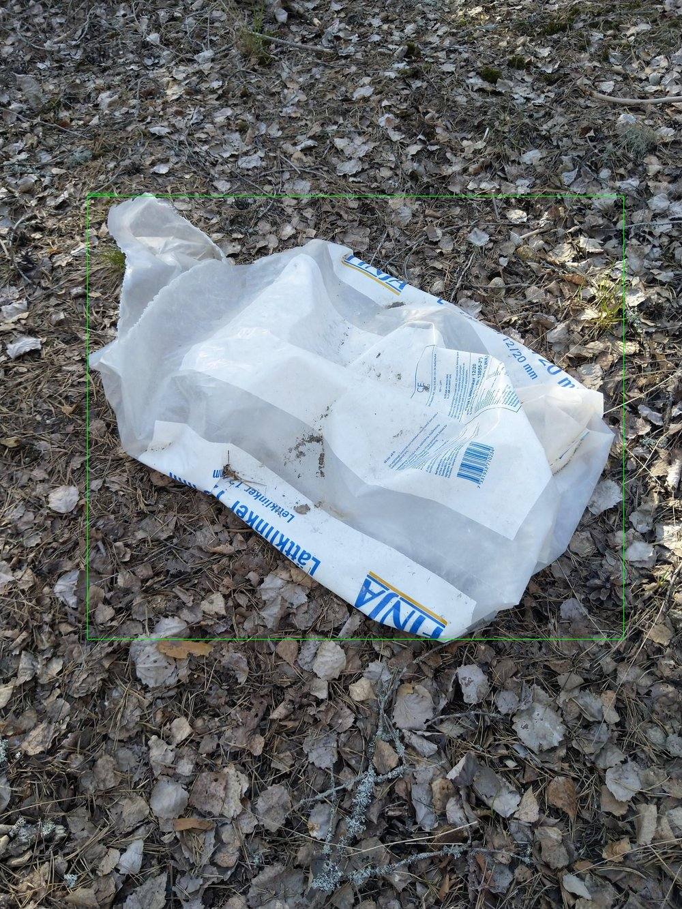

YOLO Training & Optimization
- custom dataset training
- detection performance optimization
- small-object detection
- model evaluation
Open to remote freelance projects
Computer Vision Engineer
Building practical computer vision systems — from YOLO model optimization to real-time video analytics.
YOLO · Video Analytics · Object Tracking · Python / PyTorch
Resume: place PDF at assets/resume/Qiuwei_Liu_Resume.pdf
Hire me to turn detection requirements into reliable, measurable systems.
Real-Time Video Analytics
Python · YOLO · ByteTrack · OpenCV · FastAPI · RTSP
Video / RTSP → Detection → Tracking → Analytics → Events → API → Dashboard
FPS is a development benchmark on Apple M1, not a guarantee for every model or deployment.

YOLO Model Optimization
Python · PyTorch · YOLOv8 · Error Analysis
75.5% of validation objects were Tiny Objects — analysis identified small-object detection as primary bottleneck and motivated higher-resolution experiments.
Python · GPU Scheduling · DAG · Optimization · Reinforcement Learning
Research on node-level online scheduling for dynamic Video-Agent workloads.
PredOpt-H5 vs Myopic: avg completion ~2.1% better, deadline miss 10.98% → 10.47%
Presented as research / experimental systems work, not a production scheduler.
South China University of Technology — Master's Student in Mechanical Engineering, 2025 – Present. B.Eng. in Vehicle Engineering.
Focus: Computer Vision · Video Analytics · GPU Scheduling · AI Systems
Open to remote projects and technical collaboration.
qiuweiliu03@gmail.com